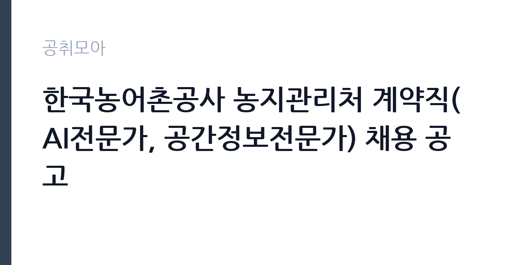

[공공기관] 한국농어촌공사 농지관리처 계약직(AI전문가, 공간정보전문가) 채용 공고
한국농어촌공사 · 전남광주 · 마감 2026-11-05 (D-15) · 출처 잡알리오

한눈에 보는 모집 조건
| 기관 | 한국농어촌공사 |
|---|---|
| 공고명 | 한국농어촌공사 농지관리처 계약직(AI전문가, 공간정보전문가) 채용 공고 |
| 고용형태 | 기간제 |
| 근무지 | 전남광주 |
| 게시일 | 2026-10-21 |
| 마감일 | 2026-11-05 (D-15) |
지원자격, 이렇게 읽으세요
- 공공기관 채용공시
- 세부 조건은 원문 공고문 확인
기간제 근로자는 근로계약 기간이 정해진 신분입니다. 계약 기간과 갱신 가능 여부가 근로계약서에 명시되며 기간 만료 시 근로관계가 종료됩니다. 결원 보충이나 특정 사업 기간에 맞춰 채용되는 경우가 많아 업무 범위가 명확합니다. 이번 공고는 한국농어촌공사에서 직접 진행하는 자체 전형으로, 응시자격과 제출서류는 공고문에 항목별로 제시됩니다. 전문직 채용은 관련 전공과 경력이 핵심 기준입니다. 석사 이상이나 관련 자격, 실무 프로젝트 경력을 요구하는 경우가 많습니다. 사용 가능한 도구와 언어를 구체적으로 제시해야 하며 포트폴리오를 요구하기도 합니다. 계약 기간과 재계약 조건이 명시되므로 원문을 확인하십시오. 이해충돌과 보안 규정 준수 의무가 적용됩니다. 서류는 접수 마감 이후 보완이 되지 않으므로 자격 요건과 증빙 서류를 마감 전에 모두 갖춰야 합니다. 공고문에 명시된 우대 사항은 해당 여부를 확인해 증빙을 첨부해야 가점이 반영됩니다. 응시 자격 판단이 애매하다면 접수 전에 채용 담당 부서로 문의하는 편이 안전합니다. 서류 제출 후에는 소명 기회가 없습니다.
이 공고의 포인트
이 공고의 첫 번째 포인트는 고용 형태입니다. 계약 기간이 정해져 있어 근무 종료 시점이 명확합니다. 그만큼 짧은 기간에 어떤 실적을 남길지가 중요해집니다. 두 번째는 업무 범위가 명확하다는 점입니다. 데이터·공간정보 전문직 직무로 채용되므로 배치 이후 담당 업무가 크게 흔들리지 않습니다. 세 번째는 근무지입니다. 전남광주 지역 근무로 수도권 공고에 비해 지원자 분포가 넓지 않아 상대적으로 경쟁이 분산되는 경우가 있습니다. 직무 특성이 분명해 본인의 경험과 맞는지 빠르게 판단할 수 있습니다. 선발 인원은 공고문에 명시되어 있으니 모집분야 항목을 함께 확인하십시오.
전형은 어떻게 진행되나
전형은 서류심사와 면접심사를 기본으로 하고 직무에 따라 필기나 실기, 체력검정이 추가됩니다. 서류 단계에서는 응시자격 충족 여부와 제출서류 형식을 확인하며 이 단계에서 탈락하는 지원자가 적지 않습니다. 면접은 직무 이해도와 경험을 확인하는 방식으로 진행되고 발표는 개별 통보나 홈페이지 게시로 이뤄집니다. 최종합격 이후에는 결격사유 조회와 채용 신체검사가 이어지며 이 절차에서 문제가 확인되면 합격이 취소될 수 있습니다. 구체적인 전형 단계와 배점은 공고문에 표로 정리되어 있으니 원문을 기준으로 준비하십시오. 결과 발표는 문자와 이메일로 동시에 이뤄지지 않는 경우가 있어 두 경로를 모두 확인하십시오.
원문에서 확인한 전형 방식
■ 공통 ○ 성별, 연령 제한 없음 ○ 임용예정일부터 즉시 업무종사 가능자(임용예정일: `26.12.1.) ○ 공사 인사규정 제9조의 임용 결격 사유가 없는 자(첨부 1) ○ 남성의 경우 병역법 제76조에서 정한 병역의무 불이행 사실이 없는 자 ■ 경력 ○ 아래 요건 중 1개 이상 갖춘 자 ① 전공분야 학사 이상 소지자로 관련 분야 근무경력이 2년 이상인 자 ② 관련분야 근무경력이 5년 이상인 자 ※ 전공분야 - AI전문가: 컴퓨터공학, 소프트웨어공학, 인공지능, 데이터사이언스, 통계학 또는 위 전공 내용을 포함하는 전공학과 - 공간정보전문가: 공간정보공학, 지적학, 토목공학, 농업토목 또는 위 전공 내용을 포함하는 전공학과
이런 분께 추천해요
- 관련 전공과 실무 프로젝트 경력을 갖춘 분
- 분석 결과를 문서로 정리해 전달할 수 있는 분
- 공공 데이터와 공간정보를 다뤄본 경험이 있는 분
지원 전 체크리스트
- 응시자격 요건과 경력 기준을 충족하는가 — 경력은 증명서로 입증해야 합니다
- 계약 기간과 근무 시작일·종료일을 확인했는가
- 제출서류 목록을 모두 준비했는가 — 누락 시 서류 단계에서 탈락합니다
- 접수 마감 2026-11-05 이전에 접수 방식을 확인해 제출했는가
모집 일정과 제출 타이밍
2026-10-21에 공고가 올라왔고 접수는 2026-11-05까지입니다. 남은 기간은 15일이며, 이 기간에 자격증 사본과 경력증명서, 주민등록등본 같은 기본 서류를 모두 준비해야 합니다. 경력증명서는 발급에 며칠이 걸리는 경우가 있으니 가장 먼저 신청하십시오. 접수는 온라인과 우편·방문으로 나뉘는 경우가 많고, 우편 접수는 도착 기준으로 판정되므로 마감일 소인만 믿으면 안 됩니다. 면접 일정은 서류 발표 후 개별 통보되므로 제출 후에도 연락을 받을 수 있도록 유지해야 합니다. 임용 예정일이 빠르게 잡히는 공고이므로 현재 일정과 겹치지 않는지 미리 확인하십시오. 광주 근무지는 대중교통 노선이 제한적인 구역이 있어 통근 수단을 미리 점검하십시오. 마감까지 여유가 있어 자격 요건을 천천히 확인하고 준비할 수 있습니다. 선발 인원은 공고문의 모집분야 항목에 직종별로 제시되어 있습니다.
직무 이해하기: 공공기관
공공기관은 도로와 수자원, 농지, 부동산 시장 관리 같은 공적 기능을 수행합니다. 현장 사업소는 도로와 시설 유지 관리, 조경과 환경 관리 업무를 직접 수행하며 계절 사업에 따라 기간제 인력을 채용합니다. 전문직 업무는 데이터와 시스템을 활용해 기관 사업의 판단을 지원하는 일입니다. 공간정보 분야는 지적도와 위성영상, 측량 데이터를 가공해 농지와 시설 현황을 분석합니다. AI 분야는 업무 데이터를 정리해 모델을 적용하고 결과를 검증하는 절차를 맡습니다. 분석 결과를 보고서와 대시보드로 만들어 담당 부서에 전달합니다. 계약직으로 채용되면 과제 기간과 성과 목표가 정해집니다. 업무는 혼자 처리하기보다 부서 단위로 나눠 진행되므로 담당 구역과 협업 범위를 입사 초에 확인하는 것이 중요합니다. 직무 교육은 입사 후 기관 자체 계획에 따라 진행되므로 사전 경험이 없어도 시작할 수 있습니다.
자기소개서 작성 팁
전문직 지원서는 프로젝트 단위로 성과를 정리하는 것이 효과적입니다. 문제 정의, 사용 데이터, 방법, 결과와 한계를 순서대로 쓰십시오. 지원 기관의 사업 데이터와 연결되는 경험이 있다면 앞부분에 배치하십시오. 계약 기간 동안 달성할 목표를 수치로 제시하면 준비도가 드러납니다. 직무 경험이 많지 않다면 경험의 양보다 과정을 구체적으로 쓰는 편이 낫습니다. 어떤 상황에서 무엇을 판단했고 어떤 결과가 나왔는지 순서대로 서술하면 신뢰가 생깁니다. 지원 동기와 기여 방안은 한 문단씩 짧게 유지하고, 가장 자신 있는 경험에 분량을 몰아주십시오. 마지막 문장은 포부보다 구체적인 실행 계획으로 끝내는 것이 좋습니다.
면접 준비 포인트
면접에서는 수행 프로젝트와 방법론을 구체적으로 확인합니다. 데이터 전처리부터 결과 검증까지 어떤 절차를 거쳤는지, 분석 결과가 실제 의사결정에 어떻게 쓰였는지 묻습니다. 모델의 한계를 어떻게 설명했는지도 질문 대상입니다. 사용 도구와 협업 방식은 명확하게 답하십시오. 답변은 상황, 판단, 조치의 순서로 정리하면 전달이 분명해집니다. 모르는 질문에는 모른다고 밝히고 확인 방법을 제시하는 편이 억지 답변보다 낫습니다. 마지막에는 근무 의사와 함께 2026-11-05 이후 일정에 언제든 응할 수 있다는 점을 전달하십시오. 마지막 질문 시간에는 근무 조건에 대한 확인 사항을 한 가지 정도 준비해 가면 성실성이 드러납니다.
급여·근무조건 읽는 법
전문계약직의 보수는 계약 기간과 연봉 총액이 개별로 정해지며, 기관 내부 기준과 경력에 따라 차이가 납니다. 성과급이나 수당 포함 여부를 확인해야 실제 총액을 알 수 있습니다. 2026년 최저임금은 시급 10,320원, 월 환산 2,156,880원입니다. 계약 연장 가능성과 전환 조건은 공고문에 명시된 경우가 많으므로 원문에서 확인하십시오. 2026년 적용 최저임금은 시급 10,320원, 월 환산 2,156,880원(주 40시간·209시간 기준)입니다. 고용노동부 고시 제2025-47호로 확정된 금액입니다. 보수는 보통 기본급, 각종 수당, 상여로 나뉘어 지급됩니다. 기본급만 보면 적어 보여도 정액급식비와 명절휴가비, 복지포인트가 붙으면 실제 총액이 달라지므로 항목별로 확인해야 합니다. 4대 보험과 퇴직급여 적용 여부도 함께 보십시오. 기간제는 계약 기간이 짧아 월 급여가 높아도 연간 총액은 적을 수 있습니다.
자주 묻는 질문
- 선발 인원은 몇 명인가요?
공고문의 모집분야 항목에 직종별 인원이 표로 제시되어 있습니다. 첨부된 공고문 원문에서 확인하십시오. - 근무지는 어디인가요?
전남광주 지역의 한국농어촌공사 소속 근무지입니다. 세부 주소와 출퇴근 조건은 원문 공고문에서 확인할 수 있습니다. - 보수는 얼마인가요?
채용 신분(기간제)과 기관 임금 규정에 따라 정해지며 구체적인 금액은 공고문 처우 항목에 제시됩니다. 금액이 공개되지 않은 경우에는 원문의 보수표를 확인하십시오.
함께 보면 좋은 공고
[공공기관] 2026년도 업무지원직(시설지원직) 신규직원 블라인드 공개채용 모집 공고 — 마감 2026-11-05[공공기관] 2026년 제1차 새울원자력본부 기간제근로자 채용 — 마감 2026-11-06[공공기관] 한국기술교육대학교 고용서비스인재교육추진단 연구원 채용 공고 — 마감 2026-11-08출처: 잡알리오 공개정보를 바탕으로 공취모아가 정리한 안내글입니다. 모집 조건·일정은 변경될 수 있으니 지원 전 반드시 원문 공고문을 확인하세요. 본 글은 정보 제공용이며 합격을 보장하지 않습니다.